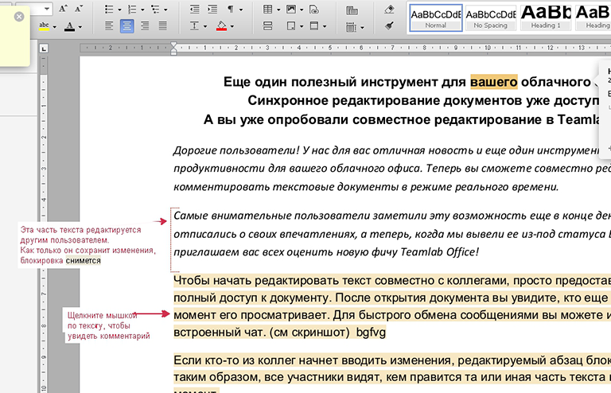
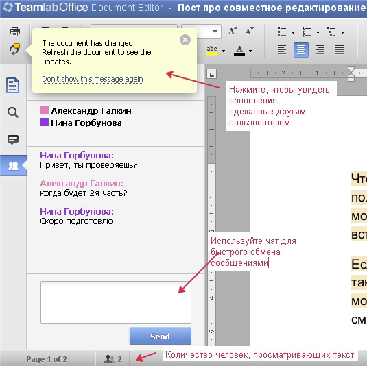
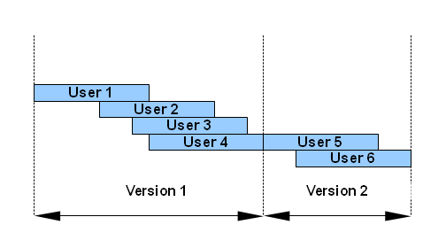

Слаженная команда механиков на гонках Формулы-1 за считанные секунды меняет колеса и болид продолжает гонку. Один профессионал — одна задача. А теперь представьте, что все колеса меняет один механик, или у каждого колеса мнется в растерянности целая команда, все мешают друг другу и дают бесконечные советы. Гонка безвозвратно проиграна.
Итак, представим, что гонкой в нашем случае является коллективное редактирование одного объекта — документа (простого или многостраничного, с рисунками, таблицами и прочими атрибутами). Как правило, предметом совместного редактирования являются объемные документы, требующие внимания всех подразделений организации: годовые отчеты, бизнес-планы, проекты бюджета, положения и соглашения, стратегии развития и управления рисками, методики и т.д. Выбор надежного и профессионального инструмента совместного редактирования — важный момент при работе с корпоративной документацией.
Онлайн-редактор документов TeamLab, реализованный на базе технологии HTML5, по функциональным возможностям редактирования давно обогнал конкурентов и все больше приближается к десктопным редакторам. О том, что он позволяет работать с документами до 5000 страниц и таблицами до 400 000 ячеек, уже известно многим, но не всегда замеченным остаётся ключевое, на наш взгляд, преимущество, а именно возможность совместного редактирования файлов, позволяющая не только улучшить юзабилити, но и говорить о редакторе Teamlab как о полноценном корпоративном решении.
Преимущества совместного редактирования
В последнее время появилось множество приложений, позволяющих работать с документами в режиме реального времени прямо в браузере (Google Docs, Office 365, Zoho и пр.). Для таких приложений одной из основных и привлекательных возможностей является коллективная работа над документом. Преимущества совместной работы над файлами в облаке неоспоримы:
Таким образом, именно редактирование документов должно быть наиболее продуманной частью корпоративной системы, нацеленной на создание полноценного офиса в рамках облачного сервиса.
Реализация совместного редактирования
Существуют три подхода к реализации совместного редактирования (collaborative editing) документов.
Первый подход. Редактирование происходит строго последовательно. Казалось бы, идеально для пользователя и для разработчика. Один человек вносит свои правки в документ, блокирует его на запись, в то время как коллеги не могут сделать ни единого исправления в режиме чтения и дожидаются своей очереди. С такой ситуацией чаще всего пользователи сталкиваются при работе с оффлайновыми десктопными редакторами. Минусы такого подхода очевидны: долгое время работы, невозможность параллельного редактирования одного и того же файла, возникновение лишних коммуникаций с просьбой освободить/закрыть документ.
Второй подход. Редактирование осуществляется синхронно и посимвольно. На первый взгляд может показаться, что это идеальное решение, ведь у пользователя создается ощущение, что документ целиком принадлежит ему и сохраняются исключительно его правки. Более того, решение кажется оптимальным и для разработчика: идет работа с каждым символом, не нужны дополнительные алгоритмы выделения и блокирования фрагментов файла, обозначения их, расстановки меток для пользователя. Однако, именно в такой ситуации можно легко столкнуться с рядом проблем и коллизий:
Третий подход как золотая середина совместного редактирования
Работая над редактором TeamLab, мы пришли к выводу, что «золотой серединой» может являться редактирование по группам («кускам») данных. Такая технология позволяет избегать ряда проблем, связанных, например, со скоростью применения правок с точки зрения пользователя или редактированием документов большого объема.
Для удобства совместного редактирования редактор TeamLab блокированным для записи фрагментом редактирования считает абзац (картинку, таблицу, меню свойств таблицы). В процессе редактирования можно легко видеть, кто именно сейчас занял объект и применять правки, синхронизируя изменения всех участников редактирования в один клик.
Возможности TeamLab при совместном редактировании впечатляют: видны правки и «занятые» участки документа, вносятся и очень быстро сохраняются совместные изменения даже в очень объемных документах, видно, какие именно коллеги участвуют в работе с файлом. Немаловажную роль играют и комментарии, которые имеют удобный интерфейс, видны как в режиме правки, так и в режиме просмотра, могут отображаться или не отображаться в зависимости от пользовательских настроек. Комментарий включает в себя текст, время, указание автора, предусмотрено также и поле ответа. Сохраненные комментарии позволяют дополнительно прослеживать историю модификации документа, т.к. представляют собой своеобразный протокол изменений.

В отличие от именитых конкурентов TeamLab легко справляется с рядом сложных задач, которые не под силу другим редакторам:

Совершая любые действия, внося изменения и правки, редактируя таблицы и рисунки, пользователь практически не замечает процесса сохранения изменений, продолжая работать со своей частью документа.
От версии до версии: сохранность данных
Не последним вопросом при совместном редактировании является версионность документа. Важно иметь сохраненным исходный документ и возможность «откатиться» к той или иной версии в зависимости от обстоятельств. Редактор TeamLab ведет список версий любой глубины, в сессии редактирования может участвовать неограниченное количество пользователей. Пользователям можно забыть о том, что нужно искать дополнительные инструменты для устранения конфликта версий, отслеживать действия и изменения, внесенные отдельными пользователями.
При этом версии документа оцениваются по следующей схеме:

Текущая сессия работы с документом заканчивается при выходе из редактирования последнего пользователя, и именно в этот момент формируется версия. Следующая версия появляется при окончании очередной сессии редактирования одним или несколькими пользователями. Версии хранятся в виде списка как независимые документы и к ним можно обратиться в любой момент. Они формируются независимо от указаний пользователя и, если не включенная версионность в Google Docs может закончиться потерей ценных данных, то в TeamLab даже самые забывчивые пользователи не упустят ни одного файла.
Все для удобства пользователей
Говоря о совместной работе в облачных сервисах, особое внимание следует уделить не только самому редактированию, но и возможности работать в различных браузерах — привычных и удобных каждому из пользователей. Для продукта TeamLab это не проблема — он кроссбраузерный и корректно работает во всех существующих браузерах, сохраняя при этом полную идентичность функциональности.
При работе в редакторе пользователи могут совещаться или проводить мозговой штурм — как и в других сервисах, в TeamLab реализован удобный чат с подсветкой имен и текста пользователей. Такое решение позволяет видеть, кто именно из коллег работает с документом в конкретный момент и обмениваться мгновенными сообщениями в режиме реального времени. Согласитесь, удобно решать общую задачу, готовить проект и при этом общаться с коллегами в одном окне. Кроме того, к совместной работе можно с успехом привлечь стороннего пользователя, не зарегистрированного на портале — достаточно просто выслать ему на любую электронную почту приглашение к участию в совместном редактировании и предоставить полные права доступа или право на чтение файла. В сведениях о документе, доступных в один клик, можно ознакомиться с количеством версий, правами доступа, статистическими счетчиками.
Готовый документ можно сохранить и загрузить в различных форматах. Так, для текста доступны — PDF, DOC, TXT, DOCX, ODT, RTF, HTML, EPUB. Такое разнообразие доступных форматов позволяет просматривать готовые документы и вне портала со многих десктопных и портативных устройств под управлением различных операционных систем.
Планы на будущее: только развитие
Однако ни одно программное обеспечение (особенно коммерческое) не может быть конкурентным без постоянного совершенствования и развития функциональности. В ближайшем будущем редактор TeamLab ждут новые преобразования, которые позволят облегчить жизнь пользователей, привыкших к десктопным редакторам и желающим получать те же самые «фичи» в облачных сервисах.
Когда идет работа над редактором TeamLab, разработчики и менеджеры заботятся о функциональности, скорости работы, интересных «фишках», удобном, красивом и понятном интерфейсе. Разработка новых версий редактора превращается, таким образом, не в создание красивой привлекательной игрушки для пользователей-гиков и любителей заманчивых интерфейсов, а в настоящий профессиональный продукт, созданный профессионалами и для профессионалов. Именно такой продукт, удобный, привычный и интегрированный в облачный сервис, позволяет посмотреть на IT-инфраструктуру бизнеса с другой стороны и приблизиться к новому мировому тренду — совместной эффективной работе над проектами в едином облаке.